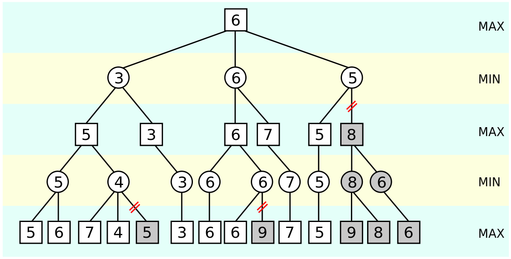

Minimax algorithm
Minimax algorithm calculate the minimax decision at a current state and try to find the optimal move for a player, assuming that your opponent also plays optimally. It use a backtracking-like method, doing a simple recursive call developping all leaf of the tree, pushing up these values level by level. Minimax explore (DFS Depth First Search) the tree. Here is a visual exemple of how minimax works

Pseudo-code of minimax :
function minimax(node, depth, maximizingPlayer) is
if depth = 0 or node is a terminal node then
return the heuristic value of node
if maximizingPlayer then
value := −∞
for each child of node do
value := max(value, minimax(child, depth − 1, FALSE))
return value
else (* minimizing player *)
value := +∞
for each child of node do
value := min(value, minimax(child, depth − 1, TRUE))
return value
minimax(origin, depth, TRUE)
Now that minimax is working fine, the program can find the optimal solution almost instantaneous EXECPT when the IA is playing the first move, it takes an average of 4.565382957458496s to find the best solution, but does it really need to calculate every game possible before finding the best option ? No, so let's optimise minimax
Alpha Beta prunning
1956, John McCarthy is presiding Dartmouth's conference, in which he presents alpha-beta prunning, that seeks to decrease the number of nodes that are evaluated by the minimax algorithm in its search tree. It stops evaluating a move when at least one possibility has been found that proves the move to be worse than a previously examined move. Such moves need not be evaluated further. When applied to a standard minimax tree, it returns the same move as minimax would, but prunes away branches that cannot possibly influence the final decision. Visual explanation of alpha-beta prunning
Pseudo-code of alpha-beta prunning
function alphabeta(node, depth, α, β, maximizingPlayer) is
if depth = 0 or node is a terminal node then
return the heuristic value of node
if maximizingPlayer then
value := −∞
for each child of node do
value := max(value, alphabeta(child, depth − 1, α, β, FALSE))
α := max(α, value)
if α ≥ β then
break (* β cut-off *)
return value
else
value := +∞
for each child of node do
value := min(value, alphabeta(child, depth − 1, α, β, TRUE))
β := min(β, value)
if α ≥ β then
break (* α cut-off *)
return value
Effectiveness Measure
| algorithm | time (s) |
|---|---|
| minimax | 4.565382957458496 |
| alpha-beta prunning | 0.206006288528442 |
As you can see alpha-beta prunning is more than 22 times more efficient, and this is only for game with 3x3 or 7x6 board, this optimisation is even more important in chess engine.
Connect 4 and minimax
Minimax can also be applied to Connect4, but as the board is 7x6, to calculate all possibles boards after n turn it takes 7n calculus, so connect4 need a maximum depth to avoid too much calculus. Then we need a way to evaluate the board when it's not a game over that we are going to call when we reach the maximum depth to stop the recursion call.
Here are the rules to evaluate a board :
The analysis of the entire grid will result in a score. A high score will correspond to a grid "favorable" to the IA. A low score will be an "unfavorable" grid. The IA will therefore test each of the possible columns and choose the one that leads to the most favorable grid (the one with the highest score).
It remains to determine the evaluation function of this score. For Connect4, a possible strategy is to evaluate all the possible quadruplets of consecutive squares on the grid. All the possible quadruplets are shown in the following figure (for a grid of 6 rows and 7 columns):
- If there are 'X' and 'O', there can never be an alignment of 4 'X' or 'O' on this quadruplet: it is a neutral quadruplet. We can assign it the score of 0.
- If there is nothing, it is neither favorable nor unfavorable, score of 0
-
If there are only IA 'O': this is a favorable quadruplet. We will give it a positive score:
- 1 '0' : the position is open for the computer. Score = 1
- 2 '0' (not necessarily consecutive): it's a much better position. Score = 10
- 3 '0' (not necessarily consecutive): this is a position that can potentially lead to victory. Score = 1000
- 4 '0' : win. Score = 100000.
-
If there are only Human 'X': this is a unfavorable quadruplet. We will give it a negative score:
- 1 'X' : Score = - 1
- 2 'X' : Score = - 10
- 3 'X' : this is a very unfavorable position. Score = - 500